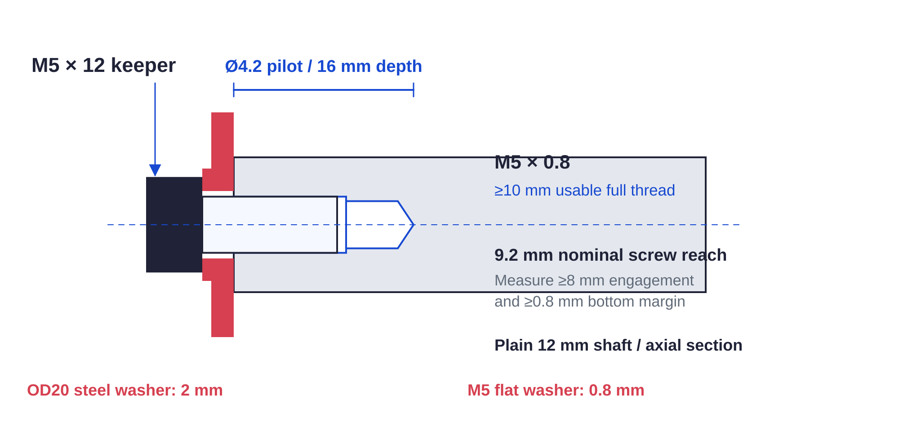

Preparation / shaft ends33 / 179
Tap eight centered shaft ends
The four plain shafts receive blind axial threads for their positive end retainers. Complete the end holes before proving a hub on its final shaft seat.
AddFour 12 mm shafts: 175, 165, 130, 85 mm · eight M5 × 12 keeper screws
Tools / setup4.2 mm drill · depth stop · M5 × 0.8 tap and wrench · metal vise · caliper / depth probe

| Feature | Required finished result |
|---|---|
| Each end pilot | Ø4.2 × 16 mm deep |
| Usable full thread | ≥10 mm; pilot depth includes the tap lead |
| Nominal screw reach | 12 − 2 − 0.8 = 9.2 mm; measure the actual washer stack |
- Cut, square and deburr the four lengths. Clamp each shaft independently; center-punch its end and drill the centered pilot with a depth stop.
- Tap square to the end with cutting fluid; advance and back off to clear chips. Finish usable threads to the measured depth, then remove all swarf and fluid.
- Check each actual screw through its 2 mm steel keeper and 0.8 mm flat washer: ≥8 mm engagement and ≥0.8 mm bottom margin. Label both ends and the shaft.
Ready when
All eight centered threads have verified usable depth and keeper reach without bottoming; shaft/hub contact remains clean and dry. A skewed, unmeasurable or incomplete tap fails positive capture. Correct or replace the shaft before applying its final-seat hub proof.